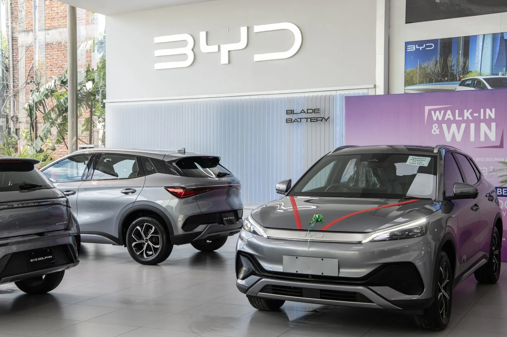
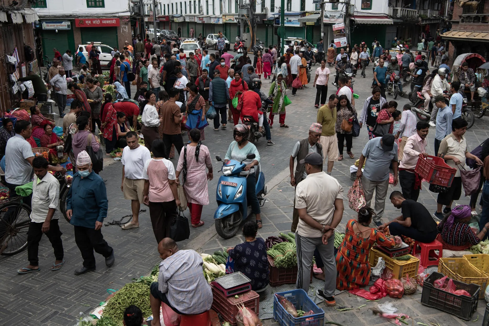
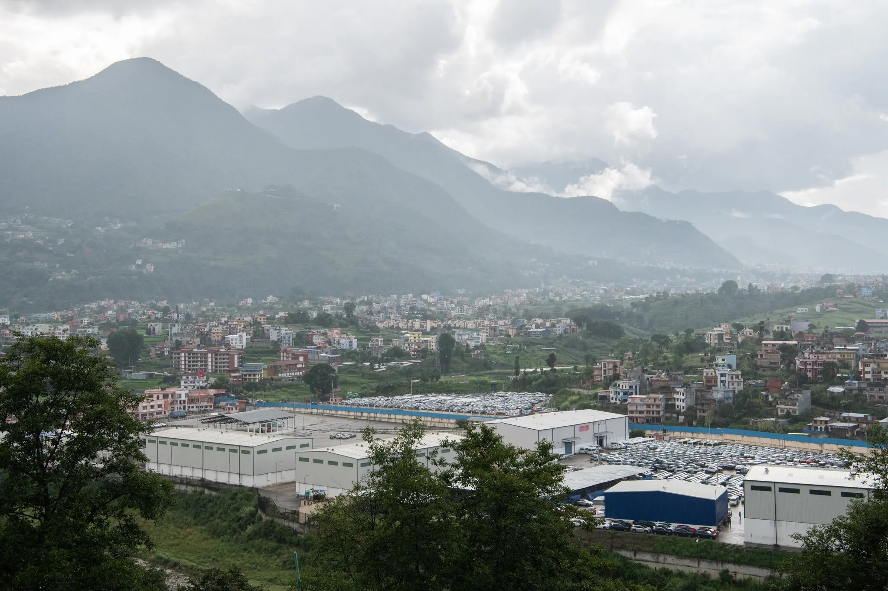
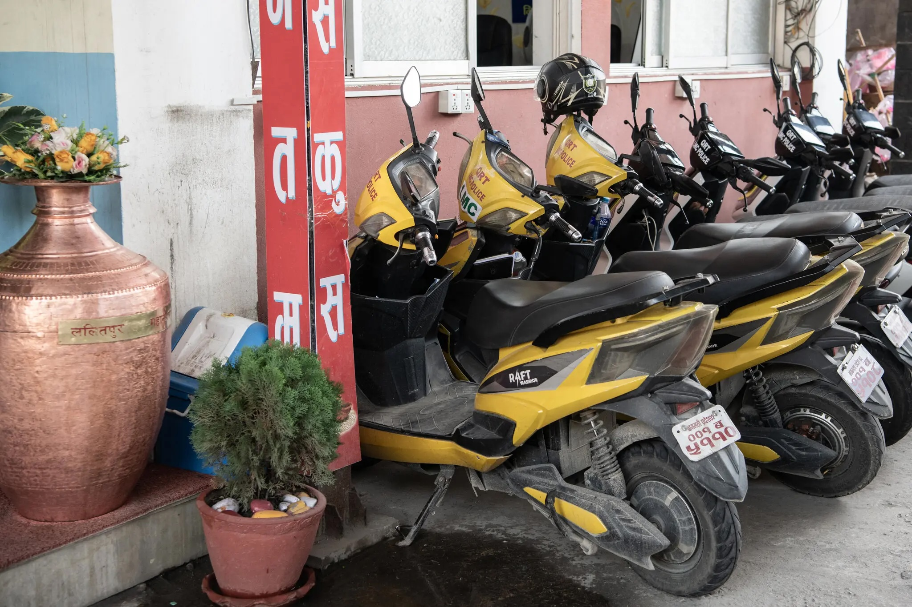

India's Secret Climate Weapon: Electric Cars
Subsidies, hydroelectricity and a manufacturing powerhouse neighbor are moving the cars into Nepal faster than almost anywhere else.
Reporting from Kathmandu, Nepal Published July 28, 2025Updated July 29, 2025

The narrow streets of Kathmandu — sized for pedestrians and rickshaws — are choked with engines. Buses, motorbikes, small trucks and taxis fill the sprawling valley with horns and exhaust. For its more than three million residents, just getting around is a dangerous, eye-stinging ordeal.
But recently, a new kind of motor has started to ease the crush. Sleek electric vehicles glide by with a quiet hum. Gleaming showrooms do a brisk business in the latest models, and charging stations on the highways have turned into rest stops with cafes for drivers to pass the time.
The transition is moving quickly. Over the past year, electric vehicles accounted for 76 percent of all passenger vehicles and half of the light commercial vehicles sold in Nepal. Five years ago, that number was essentially zero. The E.V. market share in Nepal is now behind only those of a few countries, including Norway, Singapore and Ethiopia. The average for all countries was 20 percent in 2024.
The swift turnover is the result of government policies aimed at leveraging Nepal’s wealth of hydropower, easing dependence on imported fossil fuels and clearing the smog. It has been fed by an intense push from Nepal’s biggest neighbor, China, the world’s dominant manufacturer of battery-powered vehicles.
“For us, using electric vehicles is a comparative advantage,” said Mahesh Bhattarai, the director general of Nepal’s Department of Customs. “It’s good for us. In the global market, the Chinese E.V.s are expanding. The same is happening in Nepal.”

The effort stands in contrast to policies in the United States and Europe, which have blocked Chinese E.V.s to protect their domestic auto industries. And it carries hope for other developing countries that seek to become wealthier without enduring the crucible of pollution from which many rich nations have already emerged.
The International Energy Agency estimates that the world will add a billion vehicles by 2050. A vast majority of them will be in low- and moderate-income countries, where the extent of electric vehicle adoption will help determine future levels of both air pollution and climate-warming emissions.
“We’re interested in making sure that this rapid growth in these emerging markets doesn’t follow the same trajectory as the developed markets,” said Rob de Jong, head of sustainable transportation for the U.N. Environment Program.
But as Nepal has learned, there are obstacles. The country has spent heavily on subsidies for electric vehicles, and getting rid of the support too quickly could derail the shift to battery power. Even if gas-powered passenger cars are phased out, cleaning the air will require public transportation to go electric as well.
The Asian Development Bank, a multinational development lender, has been a key financier of Nepal’s dams, transmission lines and charging networks. The head of the bank’s resident mission in Nepal, Arnaud Cauchois, is cautious about the risk of backsliding.
"Many countries are trying to electrify their vehicle fleets, but the case for doing so is even more obvious in Nepal, with its clean energy embodied in the rivers that run down from the Himalayas."
“Given the economic sense that this E.V. conversion represents for Nepal, I think I would see it as unlikely that we would have major policy change,” Mr. Cauchois said. “But that’s basically a wish more than a conviction.”
From Indian Gasoline to Chinese Cars
Many countries are trying to electrify their vehicle fleets, but the case for doing so is even more obvious in Nepal, with its clean energy embodied in the rivers that run down from the Himalayas.

A 2015 border skirmish with India squeezed Nepal’s petroleum imports, then its largest energy source. After that, the government invested heavily in hydropower and grid infrastructure that have provided cheap, nonpolluting sources of electricity. Nearly all households now have access, and the rolling blackouts have ended.
To maximize the potential of its homegrown power, Nepal would need to use it for transportation. But electric vehicles were still too expensive for mass adoption in a country with a per-capita economic output of about $1,400. So the government pulled all the levers it had to provide incentives.
Nepal’s primary source of revenue is taxes on imports. To make E.V.s cheaper, the government set its customs and excise taxes on the cars at a combined maximum of 40 percent in 2021, compared with 180 percent for gas-powered cars. Now, the electric version of one Hyundai S.U.V. costs less than $38,000, while the gas-powered model is about $40,000.
The Nepal Electricity Authority built 62 charging stations, in Kathmandu and on highways across the country. It allowed anyone to build chargers, levied negligible tariffs on their import and gave away transformers — the priciest component.
Finally, the government set electricity costs for chargers at less than market rates. At those prices, fueling a gas-powered car cost about 15 times as much as charging an electric one. That was enough to create a business model for hotels, restaurants and other roadside entrepreneurs to install chargers on their own.
“At first, everybody was scared — how to establish and whether it would run or not,” said Kul Man Ghising, who managed the electricity authority until March. “But we tried and tried and tried.” Businesses have now installed about 1,200 chargers, according to the agency, and private residences are likely to have thousands more.
‘A Win-Win Situation’
At first, automotive dealers were skeptical. But Yamuna Shrestha saw the potential.
Originally a distributor for solar power equipment made by BYD, the largest electric car company in China, she saw some of its new models on a trip to the company’s Shenzhen headquarters in 2016. She secured the license to distribute BYD vehicles in Nepal a few years later, when few others thought E.V.s could gain traction.
“Many people were pushing for fossil fuels, but there was no one advocating for electric vehicles,” Ms. Shrestha said. Her sales took off when BYD released cars that could go farther on a single charge and had high enough clearance to cope with Nepal’s rough roads. Now she has 18 dealerships and expects to sell 4,000 vehicles in 2025.
But the competition is withering, as dozens of Chinese brands have entered the market. Dealers of Indian-made vehicles say they can’t match the low price and high quality of vehicles coming from Chinese manufacturers, which have been pressing to get into any markets they can.
“There is a kind of geopolitical push when it comes to E.V.s that come into Nepal,” said Karan Kumar Chaudhary, who runs Suzuki dealerships and leads the Automobiles Association of Nepal. “You are talking about models that compete with Tesla that are coming in at half the price of a Tesla, which is unrealistic, right? As a consumer it’s a win-win situation.”
Jit Bahadur Shahi was convinced. After retiring from the national police last year, he paid about $33,000 for a new electric minibus. He ferries passengers seven hours from Kathmandu to his town, Janakpur, on the Indian border. Ten round trips are enough to cover his monthly loan payments, and he expects to pay off the van in four years.
“It’s OK, I’m happy,” Mr. Shahi, 43, said while charging the van on a Saturday. “But the problem is that charging stations are not everywhere.” He also worries how much it will cost to fix the van after the warranty expires, and what will happen when its battery wears out.
Businesses and advocates in the country are concerned that Nepal may already be backing off its commitment to the electric transition. The young democracy has had three prime ministers in the past five years, and priorities have shifted with each of them.
The nation’s central bank doubled down-payment requirements for electric vehicles this year. The federal government, seeing declining revenues from car imports, has been inching up its tariffs on electric vehicles.
The government also does not have a plan for the collection or recycling of batteries. And auto dealers worry that faulty vehicles from some of the smaller Chinese brands could discredit the category. They’re pushing for an agency that would independently certify safety and quality.
Rajan Babu Shrestha holds the license to distribute cars in Nepal from the Indian manufacturer Tata Motors. He has seen sales skyrocket on his electric models, but he could go back to selling gas-powered vehicles if tariffs rose or subsidies for charging stations went away.
“It’s a very positive direction they are going in, but it really comes down to the long-term policy,” Mr. Shrestha said. “Stability is always a question mark.”
E.V.s for Everybody
For now, the electric shift in passenger vehicles is moving swiftly. But a vast majority of Nepal’s residents don’t have cars. Instead, they use cheaper motorbikes or mostly gasoline- and diesel-powered buses.

If Nepal is to clean its air, it will have to electrify and expand its public transportation fleet as well.
Chiri Babu Maharjan is the mayor of Lalitpur, the city across the Bagmati River from Kathmandu. Legions of scooters have made it difficult for vehicles of any kind to get anywhere on the narrow roads. Electric two-wheelers have not gained much traction in Nepal, as they have in India.
“We are trying to reduce fossil fuel vehicles in my town,” Mr. Maharjan said. “This is very difficult, but we must do something.”
The solution, he said, is to give his constituents a better alternative. To do that, the mayor has placed his trust in Sajha Yatayat, a bus company that is mostly owned by the state.
Electric buses are expensive, and transit fares in the region are capped at about 36 cents for the longest ride. That makes financing the purchases difficult. Nepal’s government has stepped in with about $22 million to buy them. For the past two years, Sajha Yatayat been running 41 green-painted electric buses.
But Kanak Mani Dixit, who until recently served as Sajha’s chairman, thinks about 800 of them are needed to establish a network of routes with enough frequency to replace individual vehicles.
China is stepping into this front, too.
Recently, the Chinese government offered to give Nepal 100 more 12-meter-long buses at no cost. Mr. Dixit acknowledges that China may have its own motivations, such as increasing acceptance of its larger electric models, but he doesn’t worry about it.
“We have been accepting foreign assistance since 1950, and this is foreign assistance,” he said.
Even with more buses, taming the chaotic scrum of exhaust-spewing motorbikes will require a regional transportation authority that could clear more space for public transit. The agency’s creation has been mired in political disagreement, but Mr. Dixit hopes it can finally make clean, accessible mobility a reality.
“The Kathmandu Valley is just waiting for someone to turn the key,” Mr. Dixit said. “Coincidentally, this is the time exactly when the electric buses have made an entry. And you could just suddenly find things much different another five years from now.”